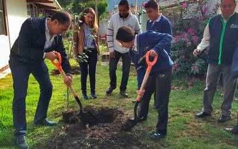
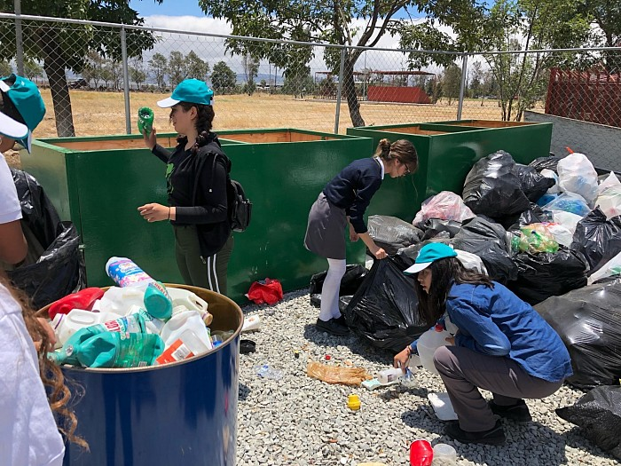
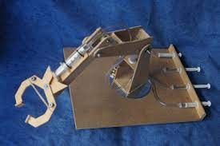

Formar personas con conocimientos Tecnologicos en las areas industrial, comercial y de servicios, a traves de la preparacion de bachilleres y profesionales tecnicos, con el fin de contribuir al desarrollo sustentable del pais.
Ser una institucion de Educacion Media superior, certificada, orientada al aprendizaje y el desarrollo de conocimientos Tecnologicos y Humanisticos
PROYECTOS ESCOLARES
CLIC AQUI PARA MAS INFORMACION
MOSTRAR MENOS
La idea de crear y gestionar hortalizas organicas se origino sobre la concientizacion del uso excesivo de aplicación de quimicos en las hortalizas, mediante grupos de alumnos que experimentan y demuestran como se puede producir el mismo producto usando abonos organicos, esto es una practica que va de la mano con el medio ambiente, ademas sirve como integracion y regularizacion en aquellos alumnos de rezago escolar.
PROYECTOS DE RECICLAJE
CLIC AQUI PARA MAS INFORMACION
MOSTRAR MENOS
En nuestro pais cada vez generamos mas basura sin darnos cuenta que muchos de los materias podemos utilizarlos nuevamente para un uso comun en nuestro entorno. Con estos proyectos se pretende que el alumno y el docente se de cuenta sobre las diferentes manualidades u objetos que se pueden hacer y que la utilizamos en la vida diaria, mediante equipos de trabajo cada uno presenta diferentes propuestas que se pueden hacer con materiales reciclados.
PROYECTOS TECNOLOGICOS
CLIC AQUI PARA MAS INFORMACION
MOSTRAR MENOS
Un proyecto tecnologico es una secuencia de tareas o actividades relacionadas entre si, que tiene como objetivo la creacion de un producto o servicio que brinde una solucion, para lo que se diseña sea efectivo. debe resolver el problema mejor que otra prouesta con la misma funcion. El resultado final es un modelo o prototipo a escala. Se debe tener presente que, cuando hablamos de tecnologias, no nos referemos a la nuevas si no a las mas apropiadas.
Calle central poniente s/n barrio san francisco c.p. 30900 (teléfono y fax: 962-64-1026)
e-mal institucional: cbtis243.dir@uemstis.sems.gob.mx
PROYECTOS LOCALES


 FACEBOOK
FACEBOOK BLOG
BLOG TWITTER
TWITTER INSTAGRAM
INSTAGRAM